Supplemental materials
Late-Holocene Subglacial Volcanism at Mount Takahe, Thwaites Glacier, West Antarctica · J. Bott et al.
Setting
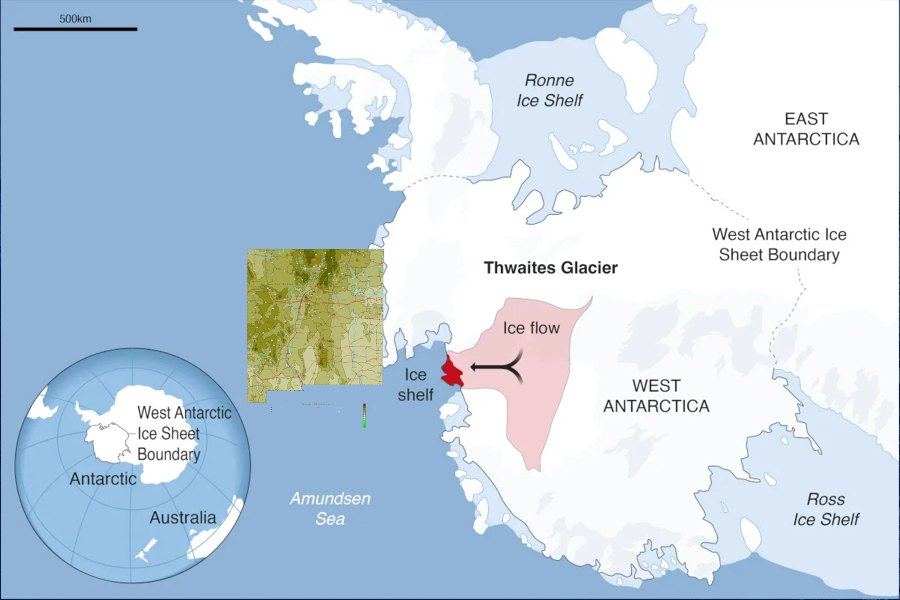
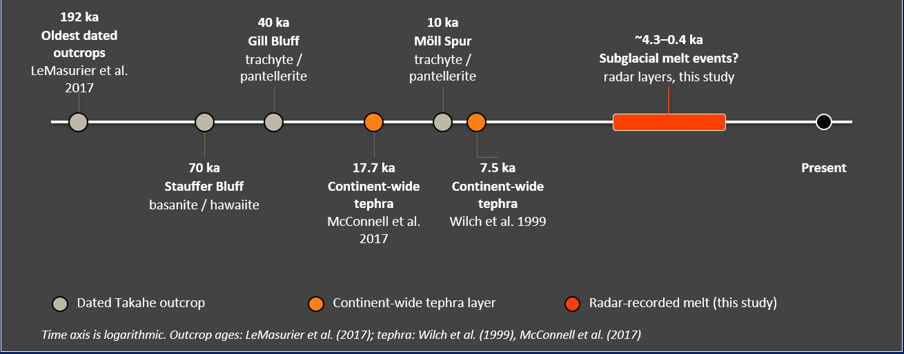
Takahe is a large polygenetic volcano with dated activity from ~192 ka into the Holocene. Seismic data show long-period earthquakes beneath it consistent with active magmatic transport at crustal depths (Lucas et al., 2025).
Question and observation
Question: is the drawdown of radar isochrones on Mount Takahe’s flank caused by subglacial volcanic heat?
Airborne radar from the 2004/05 AGASEA survey (UTIG) shows isochrones on Takahe’s flank drawn down 200–300 m over 1–3 km. These one-sided monoclines ignore the bed topography and dip toward Takahe. They first appear between lines X45a and X47a, while X43a upstream is undisturbed. They are then carried downstream into streaming ice. The infill at line Y17a ended before 0.59 ka.
Approach and rationale
First rule out the ordinary ways to deform ice layers: folding, uneven snowfall, frictional melting and regional geothermal heat. Then estimate how much basal heat is needed to explain what remains, and compare that number with known volcanic and geothermal systems.
Isochrone dating
Isochrones are traced to line Y67a, 7.3 km from the WAIS Divide ice core, and dated with the WD2014 chronology (Buizert et al., 2015; Sigl et al., 2016).
| Layer | Age (ka) |
|---|---|
| D1 | 0.592 ± 0.014 |
| D2 | 1.185 ± 0.025 |
| D7 | 1.778 ± 0.038 |
| D4 | 2.224 ± 0.045 |
| D6 | 4.260 ± 0.099 |
Layers were picked in Landmark DecisionSpace Desktop and traced across the AGASEA grid. Firn-corrected radar depths were matched to the WD2014 age–depth scale.

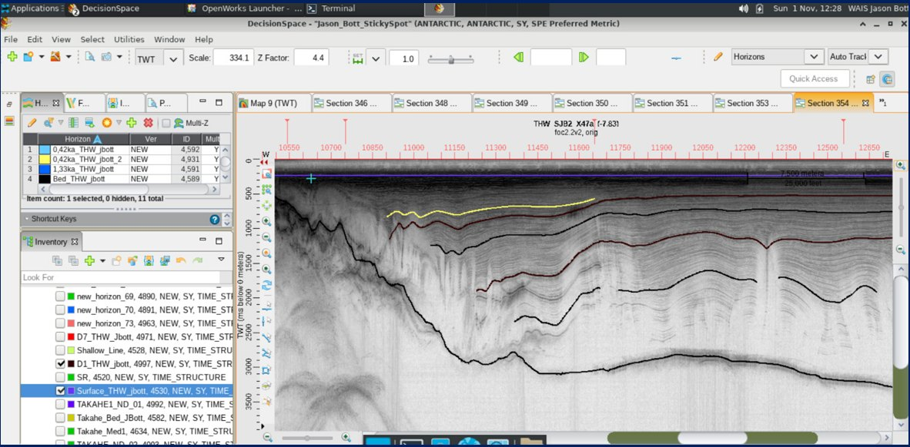

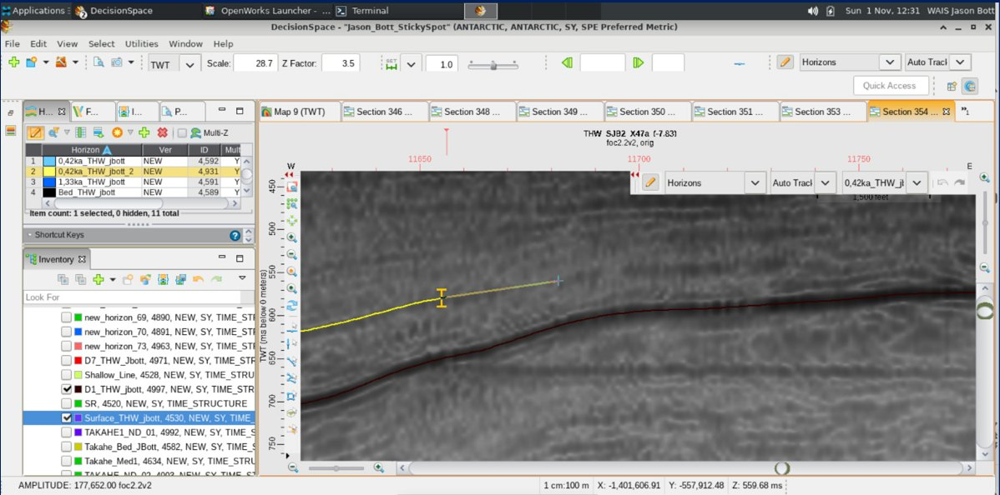
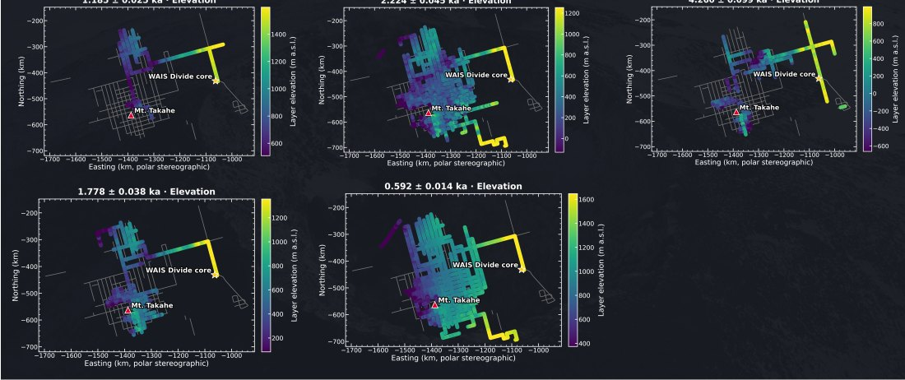
Hypothesis tests
| Hypothesis | Test | Result |
|---|---|---|
| Folding / convergent strain | Onset sits in a divergent / shear regime. Folding thickens every interval by the same factor (Jansen et al., 2024), so the trough/flank thickness ratio should be constant with depth. | Unlikely: the ratio is 1.74× for D2–D7 but ≈1× for D7–D4. |
| Extra accumulation | Snowfall needed to infill the trough. | Unlikely: needs ~0.4 m/yr extra, focused over a few km, with a flat surface. |
| Frictional melt | Basal energy balance after Beem et al. (2010). | Too small: ≤ ~2 cm/yr. |
| Background / rift geothermal flux | 0.05–0.6 W/m². | Too small. |
| Volcanic heat | Required basal flux from the infill (below). | Consistent with all observations. |
Mechanical: lateral compression and folding

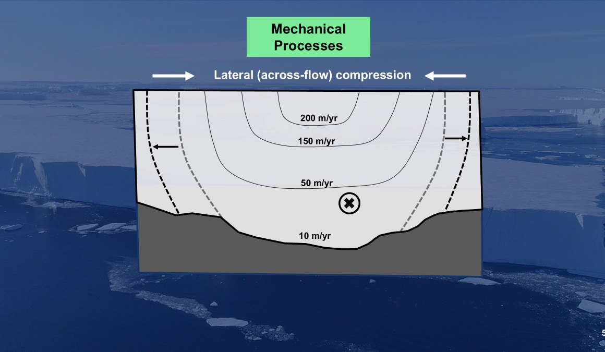

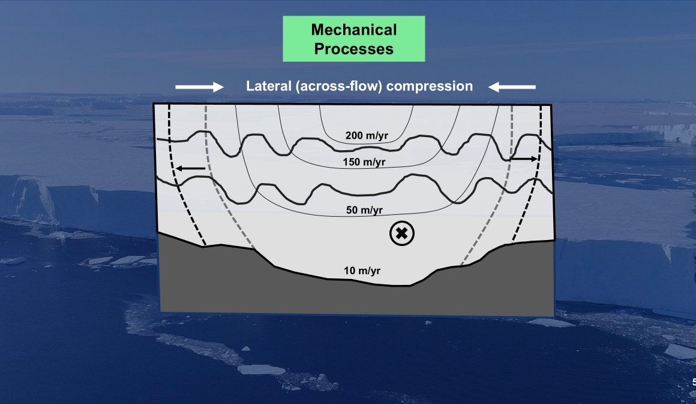
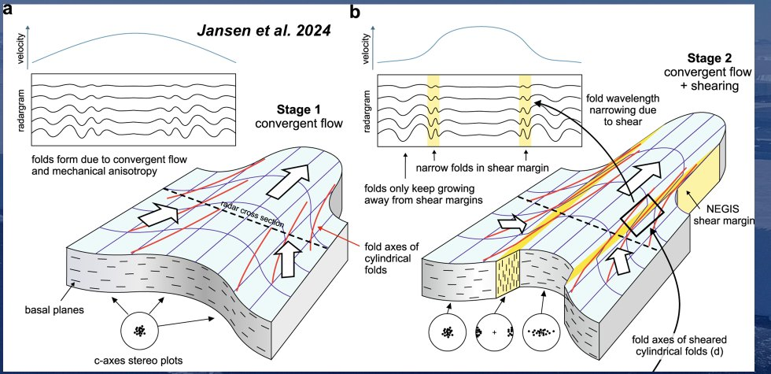
Thermodynamic: shear-margin heating

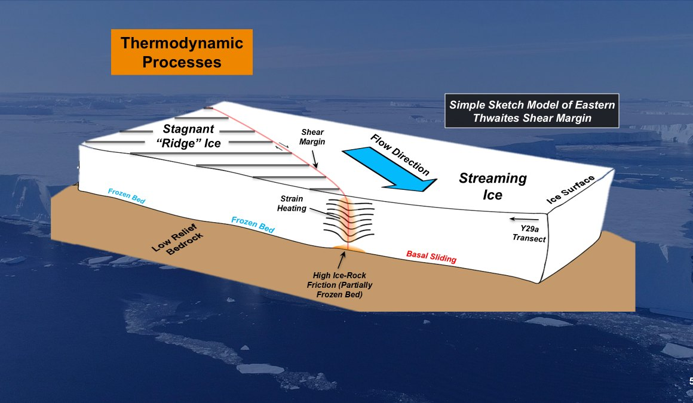

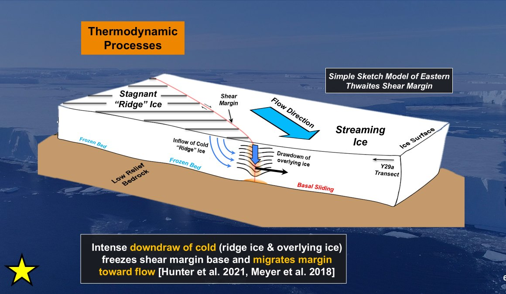
Heat-flux estimate from infill
If the extra thickness of an interval in the trough, compared with the flank, is ice that was melted from below and replaced while that interval was being deposited, then the minimum basal melt rate is the excess thickness divided by the interval’s duration:
$$\dot m \;\ge\; \frac{\Delta h_{\text{trough}} - \Delta h_{\text{flank}}}{t_{D7} - t_{D2}}$$Melting that ice takes latent heat, so the basal heat flux must be at least
$$q \;\ge\; \rho_i\,L\,\dot m$$\(\rho_i\) = ice density (917 kg/m³), \(L\) = latent heat of fusion (3.34×10⁵ J/kg). With \(\dot m\) in m/yr, divide by 3.156×10⁷ s/yr. 1 m/yr of melt ≈ 10 W/m².
Trough/flank thickness ratio 1.74× · excess 101 m over 593 yr
→ \(\dot m \ge\) 171 mm/yr → \(q \ge\) 1.66 W/m²
Across the trough the required flux reaches 4.4 W/m², giving a range of 1.66–4.4 W/m².
D7–D4: ratio ≈1×, so no depression had formed yet.
This is a lower bound: it ignores heat used to warm the ice to the melting point and heat carried away by meltwater. It also averages over the whole 593-year interval.
Nye model with basal melt
Following Fahnestock et al. (2001), the age–depth relation of a steady ice column is set by its vertical velocity. In the Nye model, vertical velocity falls linearly from the accumulation rate \(\lambda_H\) at the surface to zero at the bed. That gives the age at height \(z\) above the bed in ice of thickness \(H\):
$$t(z) = \frac{H}{\lambda_H}\,\ln\!\frac{H}{z}$$With basal melt \(\dot m\), the velocity instead falls to \(\dot m\) at the bed, so layers sink faster:
$$t_m(z) = -\frac{H}{\lambda_H - \dot m}\,\ln\!\left[\frac{\dot m}{\lambda_H} + \left(1-\frac{\dot m}{\lambda_H}\right)\frac{z}{H}\right]$$The age of the ice at the bed becomes finite, because older ice has been melted away:
$$t_{\text{bed}} = \frac{H}{\lambda_H - \dot m}\,\ln\!\frac{\lambda_H}{\dot m}$$\(\lambda_H\) and \(\dot m\) are fitted to the dated layers by minimising the relative age misfit
$$F = \sum_i \left(\frac{t_{\text{model}}(d_i) - t_i}{t_i}\right)^{2}$$Shallow layers constrain \(\lambda_H\) (near the surface, depth ≈ \(\lambda_H\) × age) and deep layers constrain \(\dot m\).
Assumptions: steady state, ice-equivalent depths (firn air removed), and a column that is not advecting in from elsewhere. Valid for the slow flank ice, not for streaming ice. If melt began recently, a steady-melt fit underestimates the true rate.
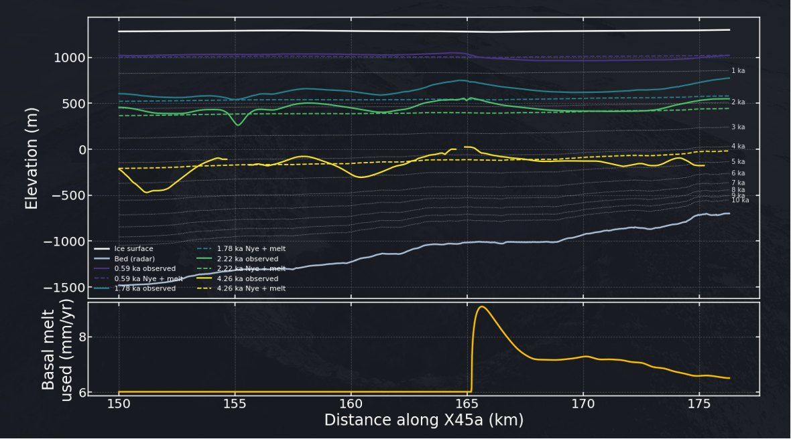
Frictional melt (Beem et al., 2010 method)
Basal melt from a basal energy balance: frictional heating from basal drag and sliding speed, plus geothermal flux, minus heat conducted up into the ice. Basal drag is estimated from surface speed, and the result is run as a Monte Carlo over the uncertain inputs.
$$\dot m = \frac{\tau_b\,u_b + G - k\,\left.\dfrac{\partial T}{\partial z}\right|_{\text{bed}}}{\rho_i\,L}$$\(\tau_b\) = basal drag, \(u_b\) = sliding speed, \(G\) = geothermal flux, \(k\) = thermal conductivity of ice. Assumes a bed at the melting point and no sideways heat transport.
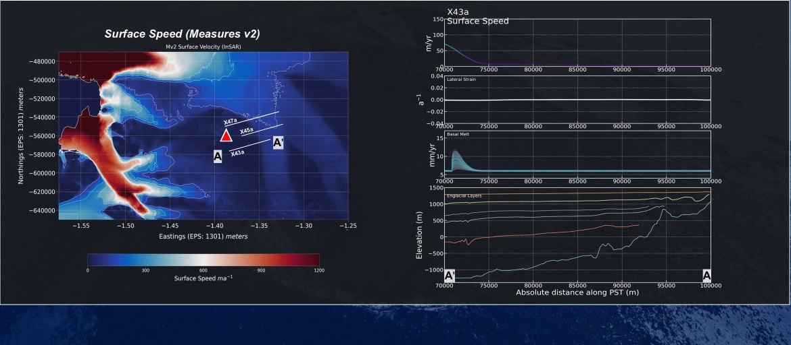
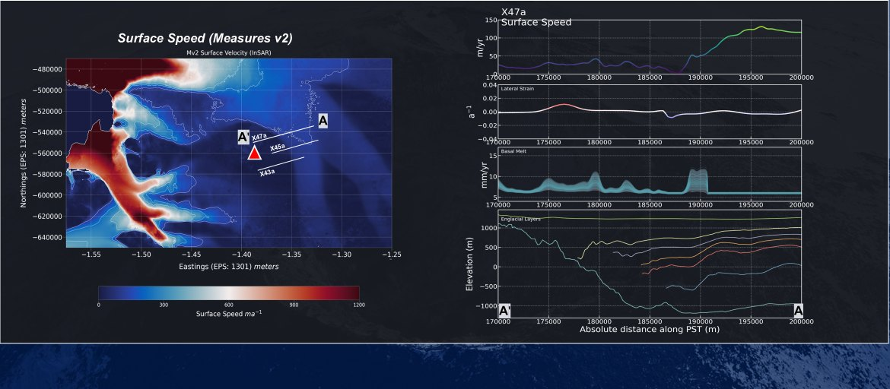
Result along the shear margin: ≤ ~2 cm/yr. That is nearly an order of magnitude short of the ≥171 mm/yr the infill needs.
How the estimate compares
| Setting | Heat flux (W/m²) | Source |
|---|---|---|
| Hawaiian swell, excess over background | 0.007–0.012† | Von Herzen et al. 1982 |
| Continental background | 0.065 | Wang & Pang 2023 |
| Malawi Rift, incl. Rungwe volcanic province | 0.053–0.082 | Njinju et al. 2019 |
| Rio Grande Rift / San Juan volcanic field | 0.107–0.119 (local >0.17) | Reiter et al. 1979 |
| Amundsen Sea / Thwaites | 0.05–0.23 | Dziadek et al. 2021 |
| Thwaites basin average / hotspots | 0.114 / >0.2 | Schroeder et al. 2014 |
| Iceland volcanic zone | 0.215 conductive; ~0.56 total* | Pálmason 1973 |
| Northeast Greenland Ice Stream onset (proposed) | ~0.97 | Fahnestock et al. 2001 |
| Yellowstone caldera average | 1.5–2.2 | Wang & Pang 2023 |
| Takahe (this study) | 1.66–4.4 | — |
| Katla caldera, long-term | ~2–4* | Guðmundsson et al. 2007 |
| Yellowstone Lake: Deep Hole / Mary Bay | 5.0 / 15.6 | Wang & Pang 2023 |
| Yellowstone steam-heated basins | 30–35 | Wang & Pang 2023 |
| Eruption (Katla 1999) | 10⁴–10⁵ | Guðmundsson et al. 2007 |
* Derived by dividing a reported power (MW) by an area; not stated in the source as W/m². Pine Island’s volcanic source (~2500 ± 1700 MW; Loose et al., 2018) is reported only as power.
† Later measurements suggest this anomaly may have been overestimated and may be only ~5–10 mW/m² (Von Herzen et al., 1989).
Rifts and plumes, even Iceland’s whole volcanic zone, stay below ~0.6 W/m². Only active calderas reach Takahe’s range. Steady conduction through the lithosphere can’t supply this; it needs magma or hydrothermal advection. This points to a localized, sustained geothermal source rather than a regional rift flux or an eruption.
Caveat: most comparison values are surface fluxes measured on land. Takahe’s is a basal flux inferred from melt and averaged over ~600 years. Compare orders of magnitude, not decimals.
Conceptual model

Schematic hypothesis, not to scale.
Limitations
- Dating: ages come from a tie 7.3 km from the WAIS Divide core and carry the uncertainties above.
- Sampling: 2D radar transects sample a 3D feature, from a single survey (2004/05) with no repeat.
- Flow paths: flowlines are poorly constrained in slow flank ice. The strongest evidence for a localized source is that X43a and X45a show no feature.
- Strain: strain at depth is not excluded without ice-flow modelling.
- Heat estimate: it is a lower bound. It assumes all excess thickness is replaced melted ice, and other distributions of heat could produce the same layers (the inversion is non-unique).
- Models: the Nye model assumes steady state and no advection, which does not hold in streaming ice.
- Direct evidence: there is no direct observation yet of meltwater, a volcanic edifice, or tephra at the site. The surface depression is inferred, not observed.
Code
Analysis code, including the 3D figure (layers_3D.py), is in github.com/jasonbott124/TAKAHE_PROJ. This site’s source is in github.com/jasonbott124/takahe-3d.